Lynn Z
Work
Resume
Etc.
About
Project Brief

Duration
Discipline
August 2021 — October 2021
UX Design, Service Design, Minority
Overview
Problem
Goals
HIVE focuses on elderly drifters in China, known as Lao Piao. Physical interactions are designed to enhance Lao Piao's social possibilities, thereby satisfying their emotional needs and increasing their focus on themselves.
After research, I gained insights into their unmet social needs with limited time and ranges of activities. They lack the formation of self-awareness, thus not paying enough attention to themselves. There are no products and services that meet the social needs of this crowd.
Enhance Lao Piao's self-awareness and attention to self-needs
Build social connections among Lao Piao themselves without being affected by the scope and timing of their activities
Process
DISCOVER
DESIGN
DELIVER
KICK-OFF
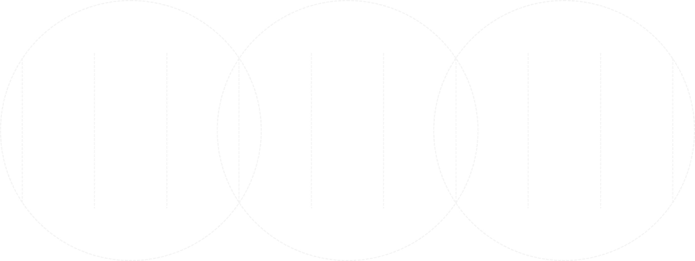
Start Point
FAMILIES IN THE 996 OVERTIME CULTURE
996 overtime culture was first prevalent at Internet companies in China, where a large number of employees have been forced to work overtime. For families with parents in a 996 working system, children hardly get any parental company.
Reference: < 996 Urban Children Report >
996 WORKING SYSTEM
77%
54%
LAO PIAO
Work At 9 | Leave At 9 | 6 Days A Week
Little Company
Leave to Elders
The Elder Floating Generation
Top 3 cities with the 996 overtime culture in China
of parents spent less than 4 hours with their kids.
of parents leave the kids' daytime to grandparents.
To support children's careers, seniors leave their hometowns to care for their third generation. 18 million Lao Piao account for 6.8% of the elderly population in China.
Desktop Research 1 - What is Lao Piao's living situation?
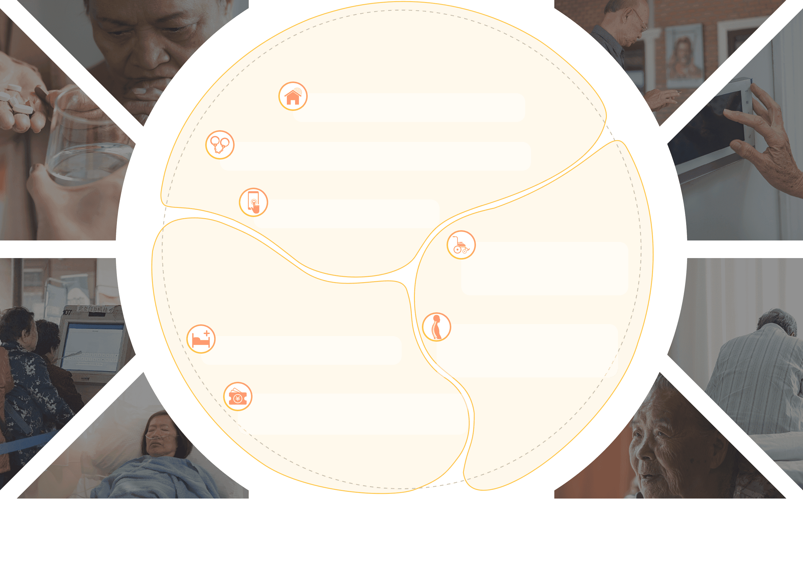 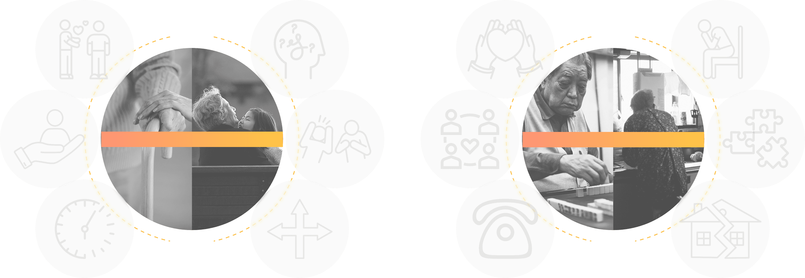OBJECTIVE ENVIRONMENT
SUBJECTIVE CONTRADICTION
Smart Home Appliances
Fraud
Mobile Phone
Formality
Reimbursement
Aging
Disease
Lao Piao marginalized by technology are not used to using smart appliances.
Multifarious fraud routines in first-tier cities make Lao Piao with a single access to information difficult to guard against.
Most Lao Piao do not know how to use smartphones.
Hospitalization is cumbersome and expensive.
Medical policies, treatment coverage, and drug reimbursement rates vary across the country.
Lao Piao worry about health problems that come with aging and have anxiety and fear of death.
Lao Piao are prone to diabetes, cervical spondylosis, and other diseases, which causes mental burden.
understand
how hard it is to raise grandchildren.support
Lao Piao to a certain extent.respect
the way Lao Piao raise their grandchildren.make new friends
in a new city.similar
habits.keep in touch with
their mates in their hometown.spoil
their grandchildren.little
attention from their family.blame
Lao Piao for their education way.nothing
in common.different
.no one
to take care of Lao Piao's mates.Inadaptation
Anxiety
Lack Of Health Care
Expectation
Expectation
Reality
Reality
Desktop Research 2 - Why Lao Piao are still willing to drift?
CHINESE CULTURAL ENVIRONMENT
TYPICAL BEHAVIOR PATTERNS OF CHINESE PARENTS
Chinese advocate collectivism. When there is individual and collective conflict, they will abandon their interests.
Under the influence of cultural values, Lao Piao tend to place more emphasis on the collective, especially family.
Chinese prefer to interfere in the affairs of their children and build interdependence.
Chinese regard helping their children as an achievement.
Parenting Styles
Geographical Conditions
Natural Disasters
Interference
Self-Worth
natural conditions in China led ancestors to live in groups.
frequent disasters require a collective effort in relief.
based on Developmental psychology
This sense of collective identity and belonging has created the Chinese family-oriented culture
Chinese are used to taking children as appendages, so they take it for granted to look after their child's kid.
Interview
I interviewed 12 Lao Piao in the residential areas corresponding to 2 primary schools in Minhang District, Shanghai.
Explore Lao Piao's routine and identify their features
2021.08.02
Jiangchuan Road, Minhang District, Shanghai
Aim:
Date:
Place:
Persona
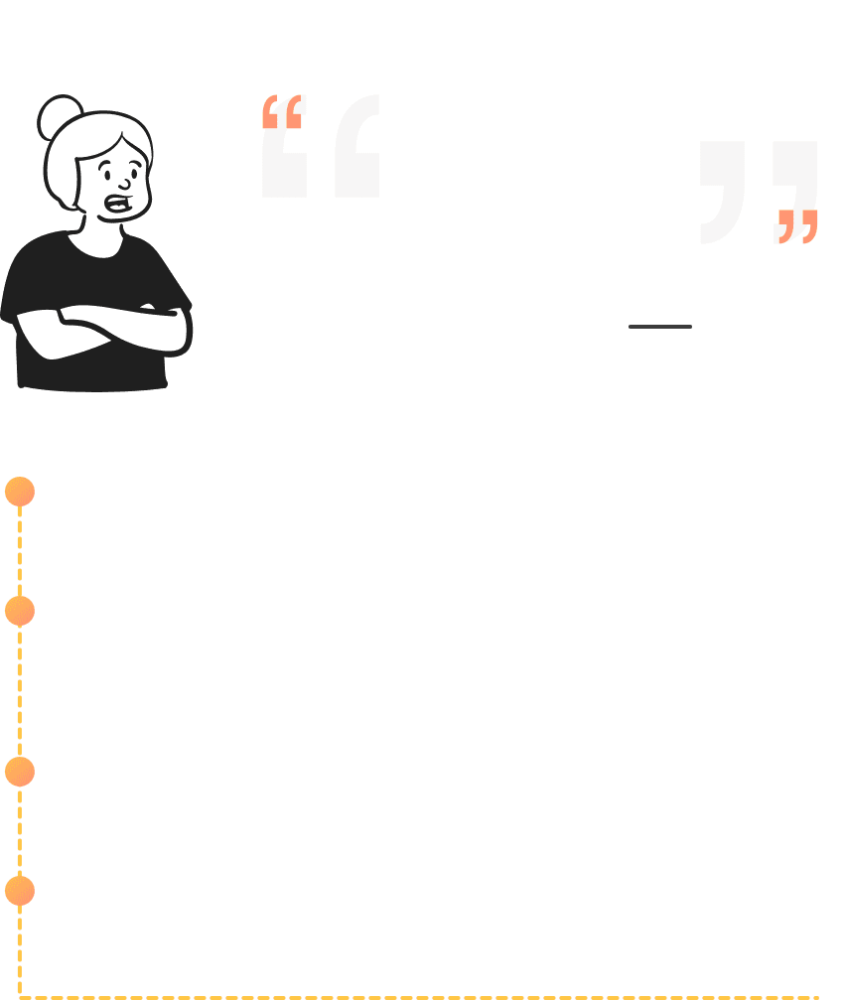 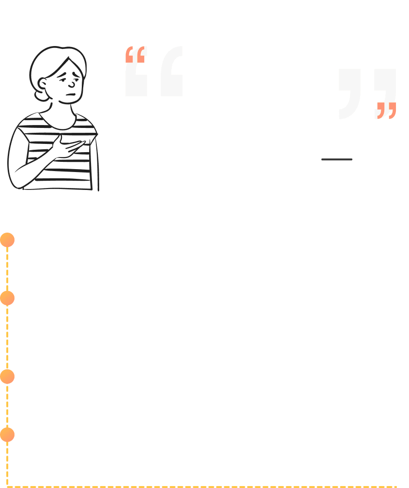 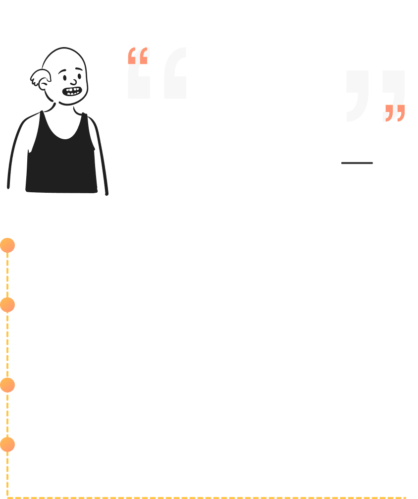It's my responsibility to take care of the kid, but I'm tired of it.
I take the pressure off my son by looking after my grandson.
I love looking after my grand-daughter, she is lovely.
Wang
Zhu
He
Drift Situation
Socializing & Activities
Contact Frequency with Home
Level of Cell Phone Use
Drift Situation
Socializing & Activities
Contact Frequency with Home
Level of Cell Phone Use
Drift Situation
Socializing & Activities
Contact Frequency with Home
Level of Cell Phone Use
3.2 years with a 3-year-old grandson
10 months with a 1.5-year-old grandson
about 4 years with a 6-year-old granddaughter
She can't understand the dialect.
Morning exercise is her daily entertainment.
She can't understand the dialect.
Her daily entertainment is watching TV.
He knows a little bit about the dialect.
His daily entertainment is not fixed.
about once every 2 weeks
not fixed
basically 2-3 times a week
She is very skilled at using her phone.
She doesn't know how to use a cell phone.
He rarely uses his cell phone.
Field Research
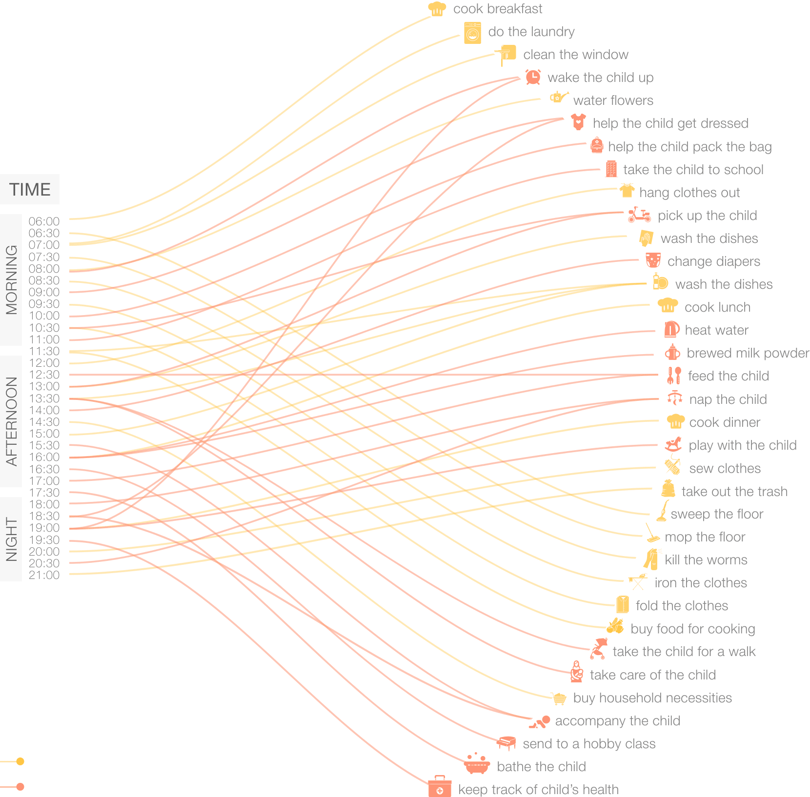 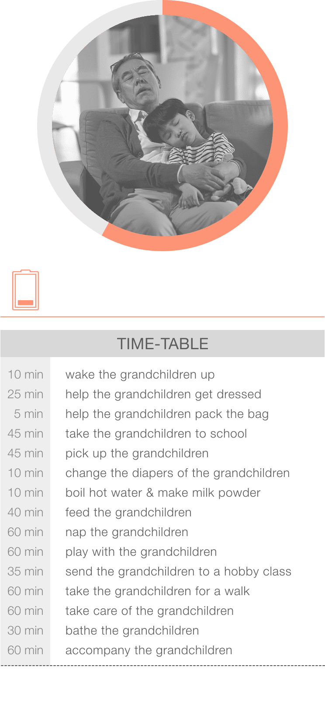 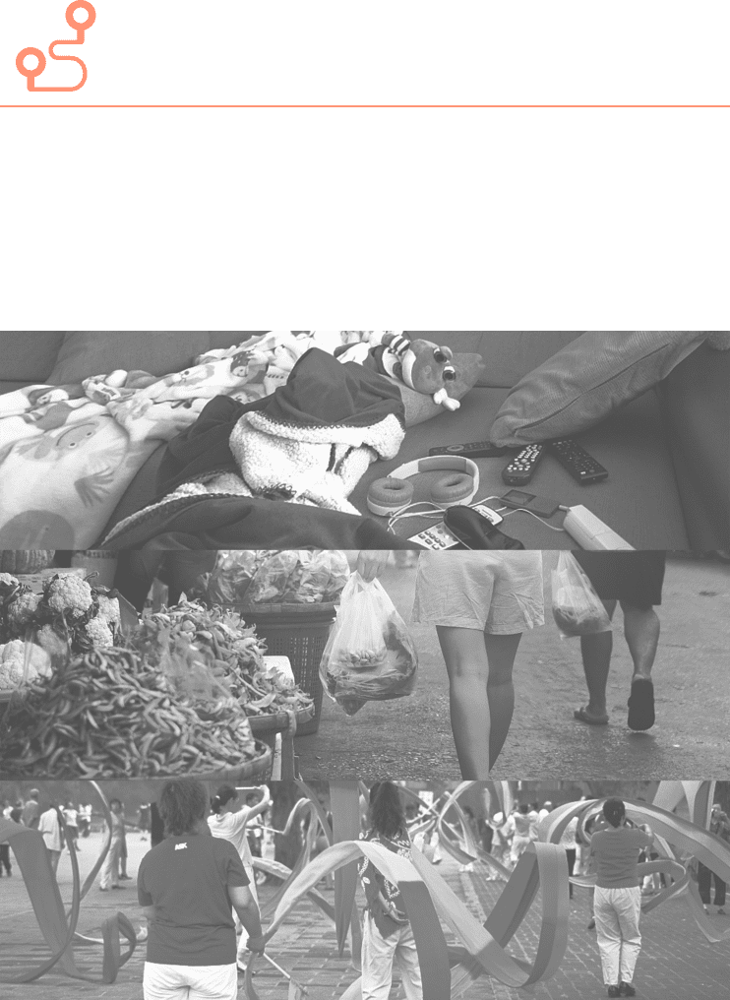 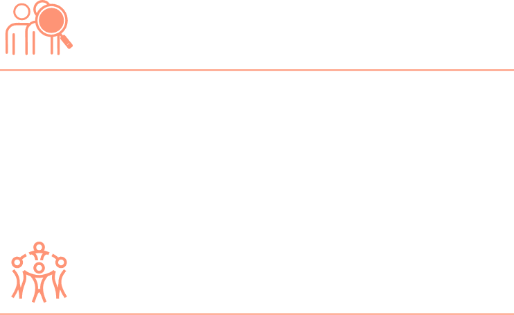 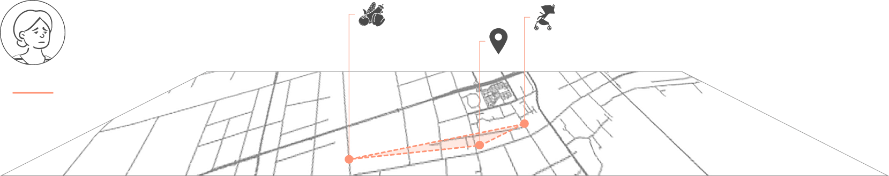
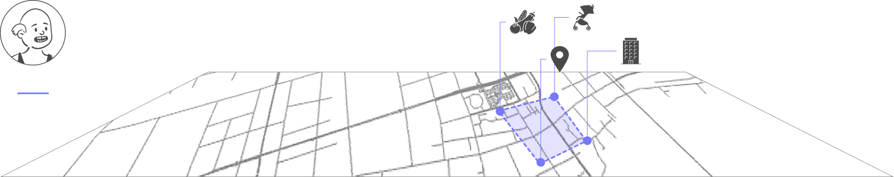
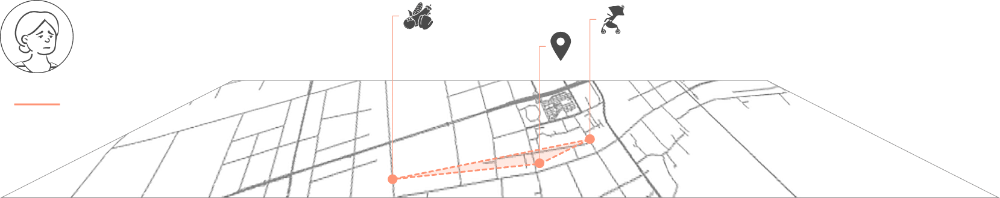
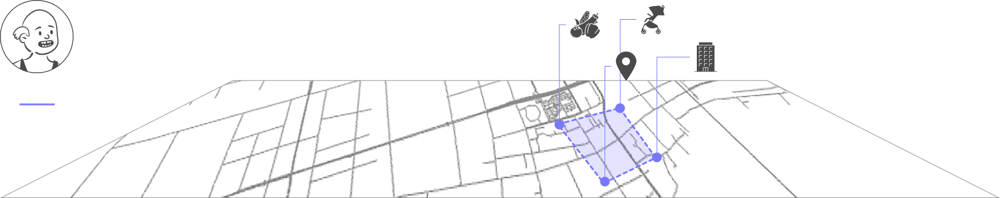
A DAY IN THE LIFE OF LAO PIAO
LAO PIAO'S DAILY SPHERE OF ACTIVITY
EMPATHY MAP OF LAO PIAO'S EMOTIONAL NEEDS
By interviewing 12 Lao Piao, I sorted out the daily routine of Lao Piao as well as the time required.
I asked the three Personas to draw their daily paths on a map to find commonalities in their spheres of activity.
Based on interviews, I made an empathy map to analyze Lao Piao's emotional needs and feelings.
They have little time for themselves, and if they do, it is very fragmented.
Lao Piao's activities are restricted in terms of location and scope.
Lao Piao gradually lose self-aware due to The satisfaction of affection.
The social and emotional needs of Lao Piao are not being met.
Regular Chores
Raising Grandchildren
Home
Pocket Garden
Estate
Food Market
Although the scope is different, there is a high degree of overlap in type, mainly home, grand-childre's schools, food markets, and pocket parks.
Lao Piao are prone to ignore or weaken their own needs and pains owing to emotional gain.
Despite the happiness of kinship, they have little company or social contact.
More than 555 min = 9.25 h
Wang
Zhu
He
Insight
Childcare and daily chores are unchangeable and fixed to Lao Piao.
Lao Piao's sphere of activity is limited by chores and caring for their grandchildren.
Lao Piao's external social needs are not met, still stuck in family-centered internal socializing.
LIMITED & FRAGMENTARY TIME
CONCENTRATED & FIXED AREA
UNMET URBAN SOCIAL NEEDS
REFRAMED QUESTION
How Might We meet Lao Piao's social needs within a limited scope of activities and time thus promoting their focus on self?
Low Self-Concern of Lao Piao
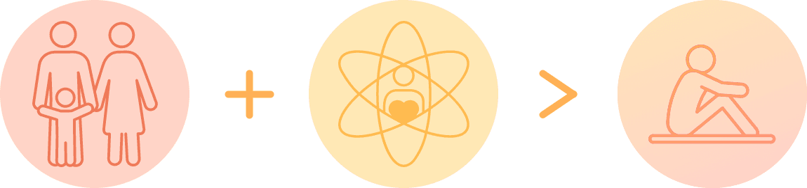In order to better study the psychology and needs of Lao Piao, I followed up and interviewed 12 Lao Piao families.
The satisfaction of family intimacy and the sense of value make Lao Piao unconsciously weaken their own needs.
WEAKENED DEMAND FOR LAO PIAO
Kinship
Ego State
Loneliness
Traditional Family Value
Self-Worth
Interference Desire
Dependence on Children
Parents Behavior Patterns
Cultural Environment
I spend most of my time with my grandson.
Raising him gives me a sense of accomplishment and joy.
I recorded Lao Piao's eating and exercise habits to get an insight into their living conditions.
UNAWARENESS OF THE FUTURE STATE
42
91
75
58
35
95
min
min
Unnoticed Diet Nutrition
Aimless Exercise
5 out of 12 Lao Piao take their grandchildren's leftovers as their meal to avoid waste, which is terrible for their nutritional absorption.
11 out of 12 Lao Piao prioritize their grand-children's nutrition but hardly care about what is good for their health.
9 out of 12 Lao Piao usually don't take the healthcare products their children buy for them on time or forget to take them.
7 out of 12 Lao Piao have the desire to exerc- ise, yet they do not have their own regular exercise program.
The average daily exercise time of the 12 Lao Piao is 35 minutes, less than they should for their age.
nutritional supplements
anddietary structure
, few Lao Piao pay attention to nutritional intake, and even if they do, it is passive.affected by time, location, and facilities
, and there is no professional and purposeful consideration.LACK OF SELF-AWARENESS
In Shanghai, the social connections of Lao Piao are limited, mainly among themselves and with their families. According to Mead, the self is formed and developed through interaction with others.
I usually talk to Lao Piao from my hometown and we both need to spend time with our grandchildren. I won't think about how life could be better.
My grandson is the most precious in the family, and I am willing to help my child to raise him together.
Who doesn't help raise the third generation of children in our age?
My son thought he was inexperienced and asked me to help them raise their children together.
the Convergence of Ideas
Lack of Concern
brought by the interaction among themselves
from family focusing on children
Lao Piao lack more social activities to gain insight into the diverse life possibilities of peers to promote formation of their own sense of self.
Social Needs Dilemma of Lao Piao
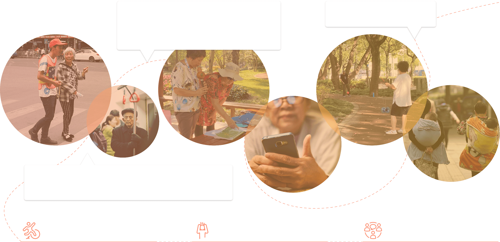According to the interviews, most Lao piao have the desire to socialize, but they have a variety of worries.
I don't speak Shanghainese and I am afraid of being looked down upon by the local elderly.
At the same time, I don't understand what they say.
I don't know what I can talk about with the local elderly.
Of course, I want to look around, but I haven't taken the metro very often, and with so many roads in Shanghai, I am embarrassed to ask the youngsters how to get around.
willingness to break the fixed path & fear of the unfamiliar environment
community identity & lack of self-confidence
differences in living habits & lack of social opportunities
Ideation
LOGICAL MINDMAP
DESIGN OPPORTUNITY
Complete Mask Recycling
Innovative Social Style
Limited But Shared Scope of Activities
Discovery of Commonality
short-term behavior
discover self-worth and sense of self
within the limited time
health-related hobby and diet
Emotion Needs
Value Sense
Self Concern
Creating social opportunities by discovering commonalities through healthy hobbies helps meet Lao Piao's social needs.
Design Content
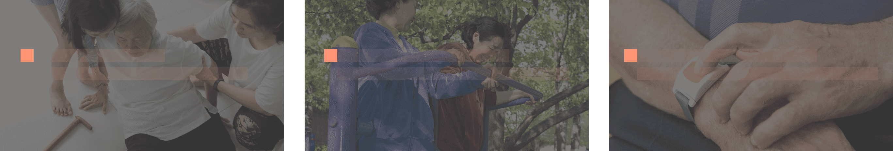 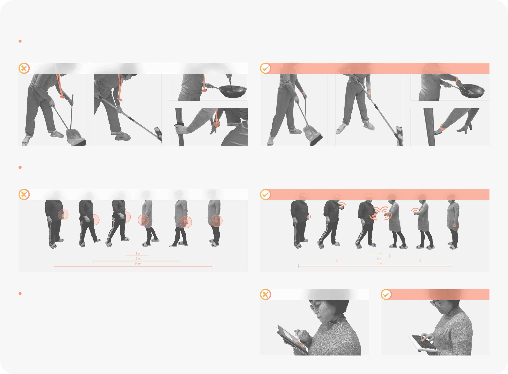SMART DEVICES
BASED ON SECURITIZATION
SENIOR COMPANIONS
BASED ON COMMON HOBBIES
AGE-FRIENDLY DESIGN
BASED ON PHYSICAL TOUCHES
Position | Falling Alarm | Adaptation
Matching | Same Hobby
Physical Buttons | Screen Avoidance
Wearing Form
Matching Mode
Age-Appropriate Design
Neck Strap
Bracelet / Watch
Flashlight
Vibration
Screen
Button
Role Play Prototype & Testing
After comparing the neck strap and the bracelet/watch, I chose the latter for the convenience of Lao Piao doing housework.
After comparing the luminous type and the vibrating one, I chose the latter to match Lao Piao's social psychology and sensory experience.
After comparing the screen and button, I chose the latter to accommodate Lao Piao's declining eyesight and inflexible fingers to avoid screen mis-touch.
Design Concept
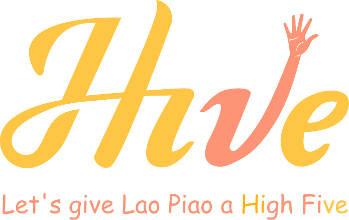 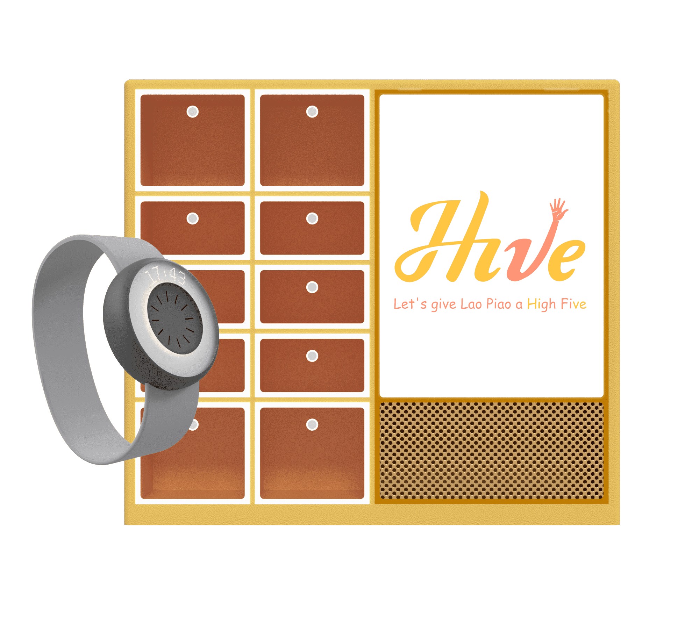HIVE
hopes to drive busy Lao Piao to gather and socialize in their limited free time and activity areas like bees in a hive, through physical social interaction.Physical Social Design For Lao Piao
 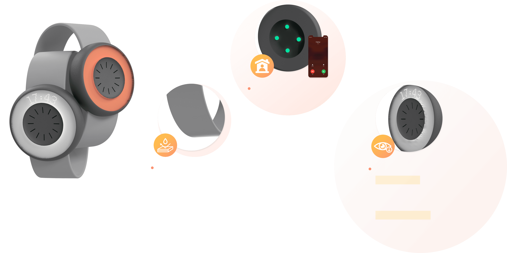
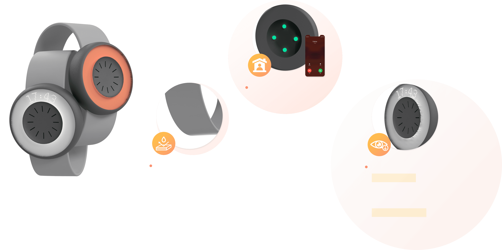
Family Share
Waterproof Material
Aging Adaptation
LED Display
Watch Sensor Module
Strip Lights
visual display
tactile & auditory
Position and fall alerts are fed back to the children's phones timely.
The waterproof silicone material can be adapted to different wrists.
Strips are colored to correspond to the states of the Hive Cabinet. The dot matrix display shows the time.
Press and hold the push button for 2 seconds and the built-in audio will broadcast the weather.
Marked items are displayed on the display screen to attract Lao Piao.
This module marks items with watches access. The cabinet door will open when sensed marked by 2 watches within 3 minutes.
The different states of the cabinets correspond to the different colors of the light strips.
Interaction Concept Introduction
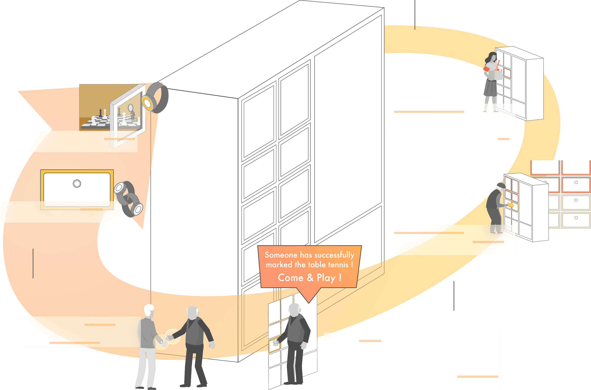PLACEMENT OF CONTENTS
MATCHING THE SAME HOBBYISTS
USE & PUTBACK
Community workers organize idle items recycling activities to get entertainment props into the Hive Cabinet, the door is shown in red.
Find a cabinet door with no lights on to return borrowed items.
2 Hive Watches can sense and open the cabinet in 3 minutes.
Their Hive Watch vibrates when they encounter someone who has marked the same item.
Flashing yellow lights of the Hive Cabinet door attracts Lao Piao to put in their unused items of interest.
Lao Piao marks the cabinet door of the items he is interested in, and the information is input into the Hive Watch.
Relevant information appears on the LED screen to attract other Lao Piao to come and play together.
Storyboard
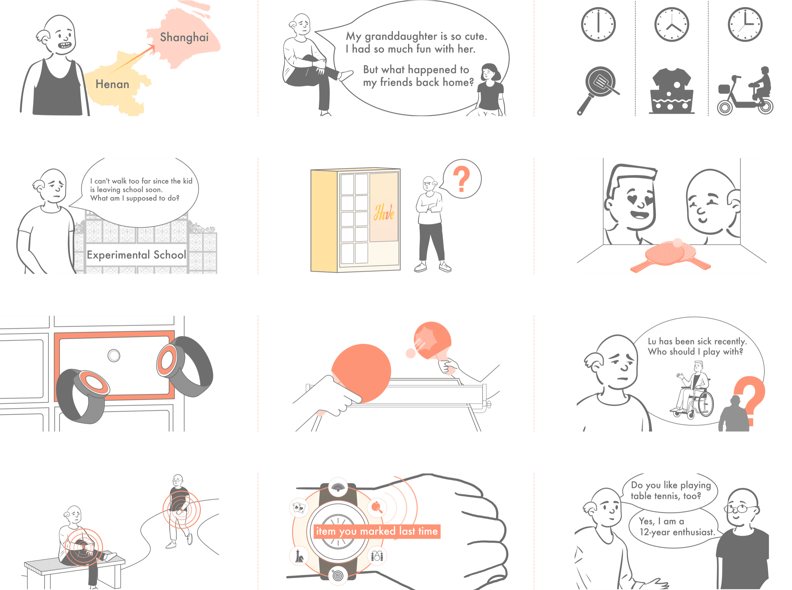He drifted to look after his granddaughter.
Besides the joy of kinship, He often felt lonely.
Despite his desire to socialize, He had no time.
His range of movement is also restricted.
In his sphere, He was drawn to the Hive cabinet.
Lao Piao Lu was also attracted to the content.
They borrowed contents using the hive watch.
He and Lu often play table tennis together.
Still, He is eager for more social opportunities.
Lao Piao Lu was also attracted to the content.
Alone again, He felt his watch vibrate.
As the two get closer, the vibration got stronger.
He made a new friend by marking contents.
Hi there!
Thanks for reaching the end of the page. If you want to learn more about me or what I'm working on, feel free to contact me!
Contact Me
Let's Connect
@ 2023 Lynn Zhang
Phone: Email:
551-689-9116 zhenglin.zhang.lynn@gmail.com